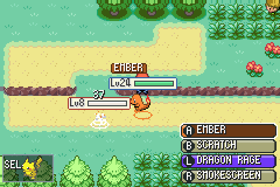

I work on state estimation for autonomous drones in the CVAR-UPM Drone Team, part of the Computer
Vision and Aerial Robotics group of the Universidad Politécnica de Madrid. Our software is Aerostack2, and we race
it at A2RL in Abu Dhabi. In my own time I port Pokémon games to run natively, no emulator needed.
Aerostack2 ROS 2 · open source · BSD-3
An open-source framework, built on ROS 2, for making drones fly on their own: one drone or a whole swarm, from
flying by hand to complete autonomous missions. It's developed at CVAR-UPM and grew out of Aerostack, which the
group has used since 2016.
Any drone, same code
The same mission runs on a Crazyflie, a DJI Tello, a Pixhawk, a DJI Matrice or in simulation; only the platform plugin changes.
Plugins all the way
State estimators, controllers and behaviors are plugins: swap one and the rest of the system doesn't notice.
Ready-made behaviors
Take off, go to, follow a path, land, trajectories, swarm flocking, started and watched from a mission.
Missions your way
Written as a Python script or as a behavior tree.
ROS 2
ApplicationsYour mission
Mission controlPython API · behavior trees
BehaviorsTake off · go to · follow path · land · swarm
Robotics functionsState estimation · motion control
A2RL, the Abu Dhabi Autonomous Racing League, holds races where nobody is at the controls. In its drone
championship, run with the Drone Champions League, drones flown by AI race through a track of gates at up to
150 km/h.
The catch: every team flies the same drone, and it sees almost nothing. One forward-facing camera and an IMU,
with a small computer on board; no LiDAR, no stereo, no GPS, nothing outside telling it where it is. So the race
is won in the software: finding the gates in the picture, working out from them where the drone is, and flying
the line as fast as it dares.
Speed race
Alone on the track, against the clock. The AI Grand Challenge in 2025.
Multi-drone
Several AI drones on the track at once, racing without crashing into each other. Gold and Silver races in 2026.
Human vs AI
The best AI drones against world-class FPV pilots, head to head.
Drag race
A straight line, flat out. In 2025.
Season 1 2025
11–12 April 2025 · ADNEC Marina Hall · $1M prize · 14 teams
Billed as the first race for AI drones only. MAVLab from TU Delft won the AI Grand Challenge, two laps in 17
seconds, and its drone beat top human pilots head to head.
CVAR-UPM: one of the top eight finalists, and second in our multi-drone race,
flying both laps on its own with only the camera and the IMU.
Season 2 2026
21–22 January 2026 · UMEX, ADNEC · $600,000 prize
TII Racing set the fastest lap, 12.032 s, ahead of MAVLab's 12.832 s; MAVLab won the Gold multi-drone race.
Human vs AI went to the last of nine races at 4–4, and world champion Minchan Kim took it when the AI drone
clipped a gate.
CVAR-UPM: second in the Silver multi-drone race and the sixth-fastest lap of the
championship, three times faster than the year before.
Our team: CVAR-UPM
We race with Aerostack2, the same framework pushed to racing speed. For 2026 the drone got a new MPCC
controller and positioning from several gates at once. I work on state estimation: knowing where the drone is
and how it's moving, with nothing but the camera and the IMU to go on.
Camera and IMUAll the drone has to go on.
Gate detectionFinds the gates in the picture.
My partState estimationWhere the drone is and how it's moving, from the gates it sees (PnP, several at once) and the IMU.
ControlMPCC flies the racing line.
Our team's videos
2:102026 A2RL1:22CVAR-UPM among the top teams at A2RL (2025)
The whole championship as it happened: the speed runs, the multi-drone races and Human vs AI.
2026 · Season 2
2:15The Speed Race That Changed the Championship6:31Human vs AI: Who Won the Ultimate Drone Race?10:20Code vs Instinct: The Race Continues6:18The Fastest Multi-Drone Race Yet6:43Chaos, Crashes & Split-Second Decisions | Multi-Drone Race4:22How Fast Can Racing Drones Go?
2025 · Season 1
8:29AI Grand Challenge: MAVLAB Takes the Win at A2RL1:14AI Beats Human in Autonomous Drone Race Championship Final0:57A2RL Drone Championship - Finals Day 11:32A2RL Drone Qualifiers complete
Personal projects
Pokémon games ported to run natively, with things the originals never had.

pokefirered-x
Pokémon FireRed · Windows and Android
FireRed with a lot added: battles fought in real time right on the map, a Game Corner full of new games,
playing together over the network, your Pokémon following you, and touch buttons on the phone.
HeartGold made playable on one screen, the way the Game Boy Advance games are played: every screen the DS
splits over its two screens is drawn again for one.